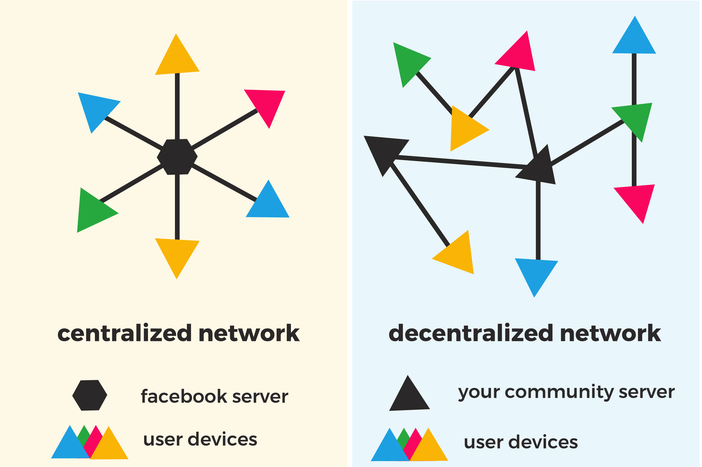

blockparty is a social network desktop application that empowers you to set up your own social network, even if you are not super tech-savvy. You need a save space for sharing thoughts, news and media with your family? You need a communication platform for your community? You want to keep control over your data? blockparty is for you!
No, no way! Unlike Facebook and others, infrastructure and control over the data stay where they belong: in the hands of
the users. blockparty is a distributed network, which means all the data you share is on your and your friends computer as well
as on a server only you control! This setup is the opposite of Facebook, which has centralized server where your data is stored, as you can see here:

Our goal is to make distributed networks user friendly and therefore accessible for more people, even for the less technically savvy! blockparty is an out-of-the-box desktop application that allows its users to easily create their own decentralized, encrypted social network and invite others to join. For us, easy setup means a setup with few technical hurdles and good usability, so that anyone can join. We're building this free and open source project as a community effort because we believe in non-commercial, neutral, and fair mobile communication for everyone.